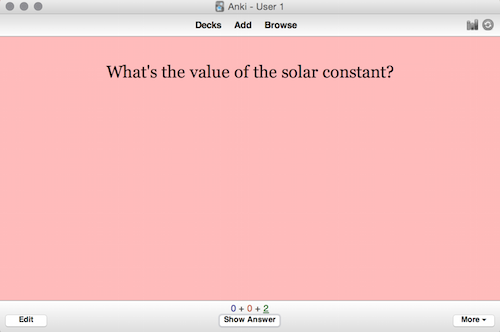
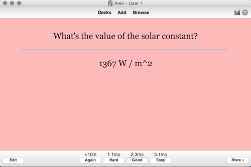

Michael Nielsen / December 2016
Summary: An explanation of the spacing effect and the lag effect in our long-term memory. How these can be used to build systems to improve long-term memory. How many existing practices actually violate these ideas.
Rough working notes, based on a discussion with Caitlin Sikora, Katherin Ye, Nicky Case, Xavier Snelgrove, and Yan Zhu. Supported by Y Combinator Research, based on work begun at the Recurse Center.Let me show you a flashcard program called Anki. Here's one of my flashcards, asking how much solar radiation is received at the surface of the Earth:
When shown a card, you pause to consider your answer to the question. Then you ask Anki to reveal the correct answer – for this question, 1,367 Watts of power, per square meter – and compare with your own response:
If you look closely at the bottom of the card you'll see buttons marked “Again”, “Hard”, “Good” and ‘Easy”. These buttons allow you to grade your answer. If you got the question wrong you tell the program you want to see the card “Again”. If you got the question right, but struggled with it, you select “Hard”. If you got the question right with relative ease, you select “Good”. Finally, if you found the question trivially easy, you select “Easy”.
Which option you select determines how long before you see the card again. If you selected “Again”, the card goes back in the queue of cards which are currently due, i.e., cards to be shown as soon as possible. But if you selected any of the other three options, Anki will delay before showing you the card again.
How are the delays chosen?
There is research suggesting that a memory is strengthened most if you're tested on it when you're just on the verge of forgetting it. This is sometimes known as the retrieval effort hypothesis. And so you can minimize your total study time by studying at those times. Ideaaly, Anki would show you the flashcard just as you were reaching that time.
In practice, Anki doesn't know exactly when you're on the verge of forgetting something. So it uses some heuristics to approximate that time. The initial delay before being tested is 1 day. If you select “Good” when you answer, that is increased by a factor 2.5, to 2.5 days. If you select “Good” again, it increases by another factor 2.5, to 6.25 days. And so on, through ever-increasing delays. By contrast, if you select “Hard”, that tells Anki you find the card difficult, and so the factor 2.5 – known as the card's “Ease” – is adjusted to be smaller. On the other hand, if you select “Easy”, the card's ease is adjusted upward, and the delay between repetitions increases even more rapidly** There's some details of how Anki changes delays that I've glossed over. The description in this paragraph merely summarizes the main ideas. .
In this essay I discuss how software systems may aid our long-term memory. I'll address the following questions:
Anki is based around many ideas from cognitive science. In this section we'll take a brief look at two of these ideas, the lag effect and the testing effect. We'll come back and look in more detail at each later.
Suppose you have 100 cardboard flashcards, which you're using to study 100 words of Russian vocabulary. One approach to studying is to review each card once today, taking you 15 minutes, and then each card once again tomorrow, again taking you 15 minutes. Another approach is to review all the cards twice each tomorrow, taking you 30 minutes. The spacing effect predicts that if you're tested on the cards in a week, you'll do much better if you use the first approach. That is, it's better to space out your study, rather than to use massed presentation (i.e., cramming). What's more, the effect is not small: even simple spacing strategies can double or more the speed at which you learn.
How should we space out our study?
In 1885, the German psychologist Hermann Ebbinghaus published experiments** Published in a translated English text as Memory: a Contribution to Experimental Psychology (Teachers College, Columbia University, 1913). from which he empirically deduced a forgetting curve. What Ebbinghaus found is that after learning a new fact, the associated memory decays exponentially. In particular, the probability of later recall when tested looks like this:
As you can see, immediately after learning the fact, the probability of recall is 1. After that the probability decays exponentially, unless the memory is recalled to mind in the intervening time, before being tested. We can express the probability through the equation
p = 2-t/h,
where p is the probability of recall, t is the time since the fact was learned, and h is the half-life of the memory, that is, the length of time that must elapse for the probability to decrease to ½. The longer the half-life, the more strongly the memory is stored. Ideally, the half-life is h = ∞, that is, you'd never forget the fact, no matter how long you wait.
So far, I've been talking about what happens in a single test. What happens if you are repeatedly tested, as in a flashcard program such as Anki? In that case, according to Ebbinghaus's model, you get repeated exponential decays:
Note that after testing the probability of recall goes back up to 1, because you're reminded of the correct answer. And then it begins to decay exponentially again. However, there's an important change: the memory half-life gets longer each time you're tested. Put another way, after each round of testing the memory is stored much better, and so we can wait longer between practices. This gradual increase in half-life is known as the lag effect. When combined with the spacing effect, as in Anki's increasing delays between cards, we'll call the idea distributed practice.
As an aside, the exact shape of the forgetting curve is still the subject of ongoing study. Ebbinghaus's exponential model is best thought of as a useful first approximation, not as the final word. This poses a problem for my earlier definition of the lag effect. Obviously, we can't define the lag effect as the “memory half-life getting longer”, when the notion of a memory half-life was defined in terms of the exponential decay. Nonetheless, regardless of the shape of the forgetting curve, many studies show that repeated testing strengthens memories, so it takes longer before the probability of recall falls to any given level. And so the lag effect makes sense and often holds, even if the exponential decay curve does not.
Distributed practice can considerably reduce the time required to commit a fact to memory. On average, after more than a year of using Anki, I answer more than 94 percent of flashcards correctly. Assuming that continues to hold, it means that for a typical card I can expect to be tested on the card about 17 times before an error. With the way Anki increases the delays between tests, that more than covers my entire lifetime. In fact, about 11 tests should cover the remainder of my life. On average, each test takes about 8 seconds. So that's a total of under 2 minutes total lifetime study, to commit a fact to memory.
Of course, there are many caveats to this discussion. But it's useful as a rough picture of how distributed practice works.
Let me make a few personal observations, both positive and negative, based on more than a year's regular use of Anki. At the outset, I will say that after some initial hiccups I've had a very positive experience with Anki, and I won't try to hide that behind a false appearance of “objective” neutrality. On the other hand, there are significant drawbacks and room for improvement in such systems, and I'm trying to get to the bottom of that. The observations that follow are far from complete. But they establish a few of the most important observations I've made while using Anki.
Statistics: As I write these words, Anki's statistics show that I've studied 341 of the past 381 days. I've averaged 142 reviews and 20 minutes per day, on those days I've studied. Each review has taken an average of 8 seconds. 5,546 Anki cards have matured in that time, i.e., I've reviewed them often enough that Anki considers the knowledge reasonably reliably committed to memory.
The certainty effect: One of the main benefits of Anki has been that if I want to remember something, I can now simply choose to do so. In the past, if I was reading a paper or book, my memory was unreliable. Of course, if I made enough effort I could guarantee recall of particular things. But in general I was at the mercy of an unreliable memory. That's no longer true.
As an example, I decided to memorize everything that seemed useful from a short book on the command line shell. I estimate I memorized more than 50 percent of the API calls in the book – many hundreds of calls. Doing so was easy and relatively quick, though tedious. Most significantly, I simply decided, without much fuss, to do this, and the process happened more or less automatically.
I've used Anki to memorize facts about APIs, about food and cooking, about restaraunts, about things to do in my new city of San Francisco. I routinely use it while reading books and papers, and while studying videos. I use it constantly in my research, to store insights that I expect to be of durable use.
Why is distributed practice not so widely used? Ebbinghaus's work appeared in 1885, and was immediately widely praised. William James, in his 1890 The Principles of Psychology, described Ebbinghaus's work at length, and lauded it as “heroic”. A stream of followups were done, gradually growing into a flood. I used Google Scholar to search for related work done since 2010; I stopped counting once I found more than 200 papers. While we still have only a very incomplete understanding of why distributed practice works (of which more below), it's fair to say that the underlying effects are both strong and quite robust across materials.
All of which makes it curious that distributed practice is underused. Although many small-scale experiments have been done, it's not used systematically at scale in any educational system I'm aware of.
Indeed, many educational practices actually run directly counter to the effect. For example, textbooks often clump similar practice problems together, rather than spreading them out. And many educational systems are based around large, infrequent exams, rather than very frequent testing. Indeed, one of the more cited papers on the spacing effect** Frank N. Dempster, The Spacing Effect: A Case Study in the Failure to Apply the Results of Psychological Research (1988). actually aims to understand why it's been so underused.
Now, it should be said that there are some widely-used educational practices
Examples where it is conventional to violate distributed practice:
Making good cards is an art: There are many mistakes one can make in . And there are also There's actually a special kind of paying attention involved. Why is distributed practice not so widely used?I've described how Anki chooses the time to schedule the next practice. Implicitly, we can think of that scheduling algorithm as a (very rough) theory of how long to delay until the next
Is it possible to do better?
The website Duolingo attempts to use machine learning to more accurately estimate the spacing between repetitions. Duolingo is a popular site for learning new languages. XXX - what Duolingo does.
Duolingo has XXX users. Suppose I sign up for the site, and starting learning Spanish. Intuitively, it should be possible for Duolingo to estimate my performance on future quizzes by looking at the performance of other users whose profile of performance is similar to mine. In this way, Duolingo can
A little more formally, Duolingo uses their existing data to build a model to estimate the half-life as a function of a student's past performance, and of the lexical complexity of the current. They call this procedure half-life regression. With that estimate, they can then estimate the optimal time to quizz me again in the future.
I won't get into the details of their model. Indeed, the model is frankly rather arbitrary.
Testing effect. It's just a model. Structure: Explain the testing effect. Show a screenshot. Duolingo has recently begun using dist. practice. But whereas Anki has a very crude model, Duolingo tries to build a slightly more sophisticated model. In particular, they build a model which is able to estimate the half-life, based on past student behaviour, and on lexical knowledge of the word. Intuitively, if someone gets a word right, adjust half-life up; if someone gets a word wrong, adjust half-life down, to oprimize some objective. It's still a relatively crude model, but they get some improvement. Much more detailed work could be done.The systems which do allow A curiosity is that it's been relatively little used. One of the most cited papers is actually to a discussion I said earlier that Anki will ideally show you a card just as you are about to forget the contents of that card. This is badly broken when It's been studied a tremendous amount. First review was in. Steady stream ever since. More . The picture is somewhat complex, a point I'll come back to. But the broad picture is Why is this so little used? Curiosity: One strange thing about Sebasitan Leitner. Piotr Wozniak. One of the most-cited papers on the effect is about What we're going to do: We're going to poke around. We're going to brainstorm First, though, I need to digress to talk a little about the role of cognitive science in all this.
Anti-patterns: It's not just that distributed practice isn't widely used in . In fact a lot of conventional wisdom and widely used patterns of design directly contradict what we know about memory.
For example, many textbooks clump subject matter together. A geography textbook may clump material into topical sections. Everything on South Africa (including quiz questions) into this section! Everything on Madagascar into that section! And so on. So you spend a day on South Africa, a day on Madagascar, and so on. It'd be better to have the material – especially the quiz questions – spread out.
A friend of mine frequently complains about the length of books. “Good book”, he'll say, “but it got repetitive. The content could have been covered in a few pages”. This is undoubtedly true of many books. But I wonder if the benefit of having it spread out over 300 pages isn't to ensure some distributed practice.
The effect is lesser The research What's the right schedule? If it's 90+ percent, doesn't that suggest that we're being too conservative? Why not auto-adjust? How useful is it all? How useful is it to know the solar constant? I wonder if we can do a reverse NMR thing, basically writing thoughts? Can we incorporate into editors? Into IDEs?Memorizing facts about people: . When I started to do this, I noticed considerbale discomfort on my own part. It revolves around several different taboos. Don't treat people as objects. Don't monitor other people overly closely. In a single word, the right test seems to be courtesy. The litmus test is: would the other person be comfortable with this? That turns out to be a rather stringest test. Knowing whether someone is vegan is fine. Knowing their favourite foods is a
In academic work, please cite this essay as: Michael Nielsen, “Tools to improve long-term memory”, available at http://cognitivemedium.com/ehi/improve_memory/index.html (2016).
In non-academic work, I'd appreciate it (and it would help me out) if you could give me a shout-out, too!